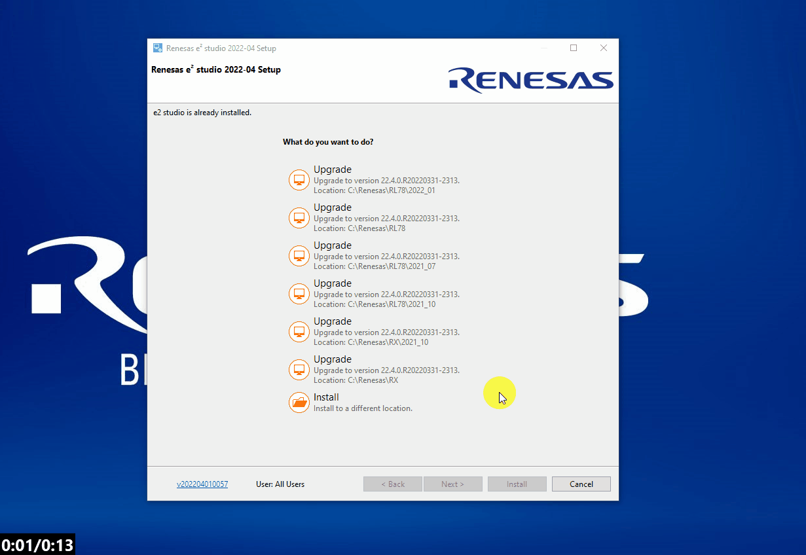
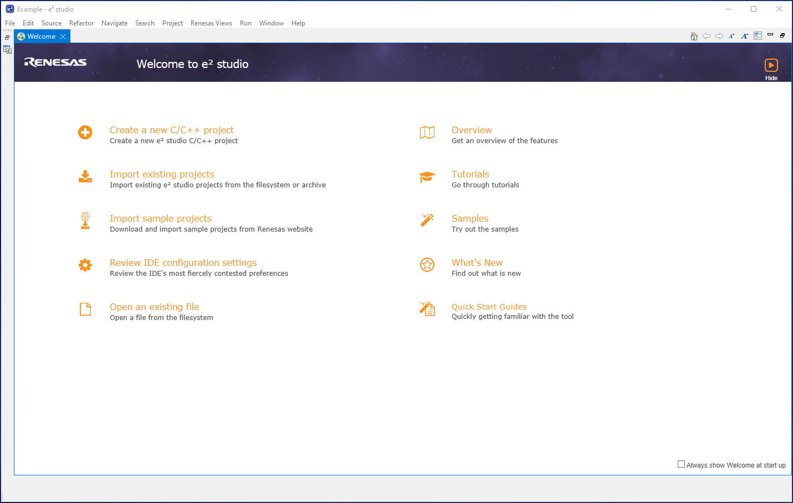

To do this, navigate to the Downloads section and select the latest windows installer for e2studio.
You will be prompted to login to your My Renesas account - please do so.

Here we will guide you through the tool installation and startup for the lab.
Go to the e2studio landing page and
download the latest release.
To do this, navigate to the Downloads section and select the latest windows installer for
e2studio.
You will be prompted to login to your My Renesas account - please do so.
Once downloaded, unzip and launch the installer (this usually works best with admin rights when using a workplace
computer).
The installer may take a minute to extract the contents, so please be patient!
If you have multiple installations you will be presented with the option to install or upgrade.
Here I will install to a new location - this is personal preference in seperating
toolchain variants.

The use of a non-default install location can greatly help with organising toolchain installations.
To change the default click [Change...] and browse to the desired location.

First click [Next >] and select the RL78 family of components.

We will go through a somewhat extended custom installation to ensure moving forward you are prepared to start developing with all Renesas tools.


Finally accept the license agreement (after careful review...) and accept the default selections for the
rest of the installation and proceed to install.

Firstly start e2studio either via the start menu, desktop shortcut or manually using the executable in the install location.
After some initial loading the workspace dialog will appear. This dialog can be used to select an existing workspace or new one.
A workspace is a project staging area, much like the solution area of visual studio and it contains one or multiple projects.
These projects can reference other projects within the same workspace using workspace relative paths.
The workspace folder also contains some meta-data specific to e2studio and this is version dependent.
Typically a shorter path length to your workspace is a good idea - the image below shows an example workspace path.
By selecting browse, you can browse to the appropriate location and also create a new folder to house your workspace.

Finally click launch when you are happy with your workspace location.
When starting e2studio for the first time you may be prompted to register the installed toolchains.
Please ensure you select all toolchains available and register them - this allows e2studio to use these toolchains
in any projects moving forward.
The image below shows the selections to be made in the toolcahin registration dialog.
Specifically those selections are:
e2studio may prompt to provide MyRenesas login credentials - this will faciltate acquiring extra-tools/plugins/update later.
As shown in the image below, proivde your login credentials, decide whether you would like Renesas to collect usage data to improve our products and services and login.

Finally you will be presented with the welcome page.
